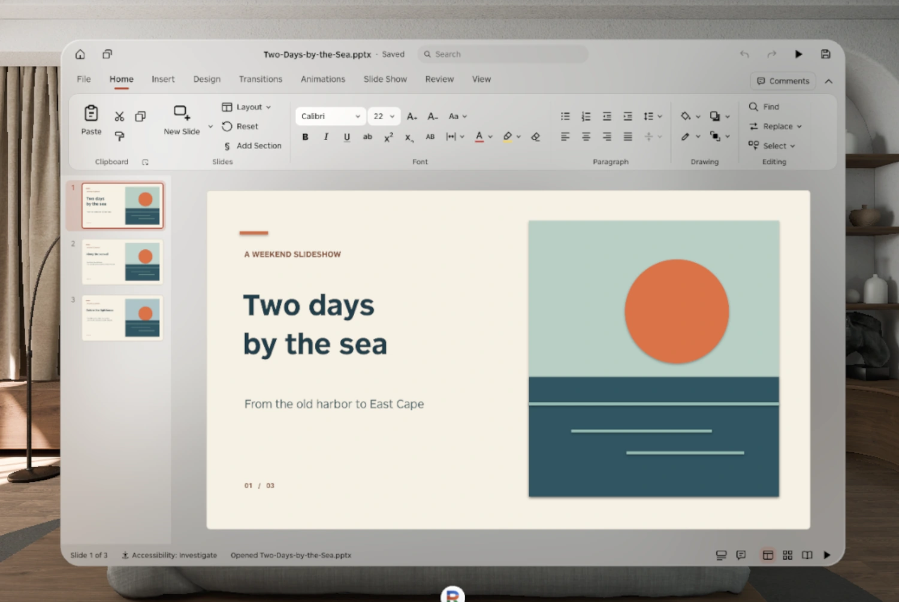

Built for PICO Space Pro
Reality Office
Documents, spreadsheets and presentations in spatial windows.



Home
Start from a template
Pages
Lay out a studio schedule
Sheets
Track a materials budget
Slides
Design a welcome deck